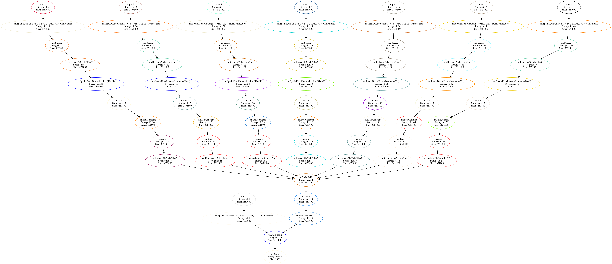
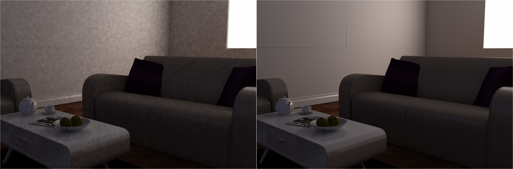
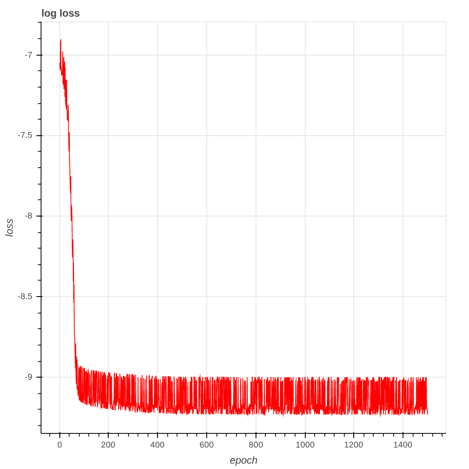
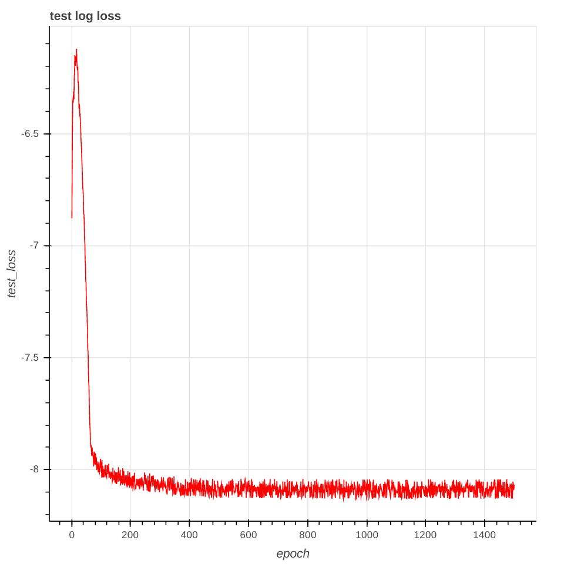

Experiment 06-03-17
Learning the variance of seven guides in the Joint Bilateral Formulation
Parameters
Dataset
- Name : INRIAdataset Dataset, 9 instances
- Guide buffer : Depth, normal (*3), albedo (*3)
- Input : image
- Target : image filtered by JBF
- imageWidth=1280
- imageHeight=1920
Learning
- optim="sgd"
- batchSize=1
- learningRate=0.1
- epoch_step="{500,1000}"
- max_epoch=1500
- weightDecay=0
- stride=10
- l1_weight=0.0
- learningRateDecay=0
- learningRateDecayRatio=0.1
Initialisation
- train_spatial_gaussian = false,
- train_guide_variance = true,
- train_only_guide_branch = true,
Network
 |
Results
Final Loss : 1.77983404581707e-04
| target |
input |
|
 |
| input |
output |
|
|
Deniose (smaller kernel and smaller spatial variance)
 |
Learning Curves
| Train curve |
Test curve |
|  |
 |
Comments
- This doesn't look very successful so far, we need to investigate further
- Quelles sont les variances apprises ?
Next experiment
- Make this experiment work
- Learn also the spatial weights
{kind=link}
{kind=link}
{kind=link}
{kind=link}
{kind=link}